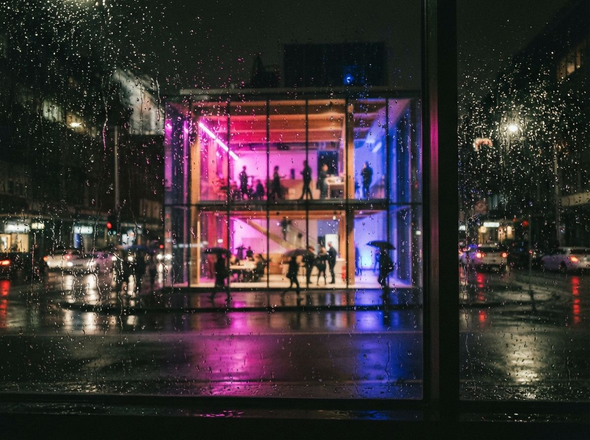
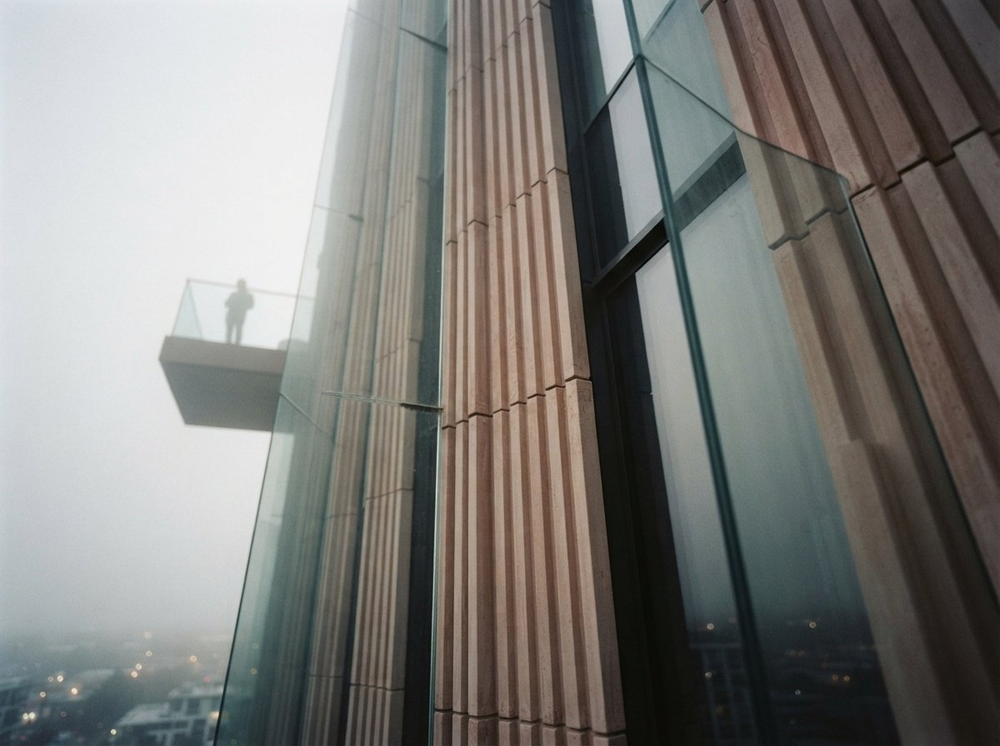

Which Midjourney alternatives should architects consider?
Choose Veras for AI imagery within a supported design application, SketchUp AI Render for viewport-based concepts inside SketchUp, or ComfyUI for configurable depth-guided image generation. These are alternatives with different controls, not proven guarantees of geometric accuracy. For a fixed design, compare every generated image against the source model before presenting it.
A facade with six windows gives you a useful buying criterion: six windows should survive the process. A prettier sky cannot compensate for a missing opening. This shortlist compares documented inputs and controls, then proposes a way to decide whether those controls are enough for your work. The recommendations are editorial judgments, not measured performance rankings.

Which alternative fits the drawing on your desk?
| Option | Documented input or control | Best reason to shortlist it | What still needs checking |
|---|---|---|---|
| Veras | Host-app view; engine-dependent geometry controls | Explore a design from its modeling environment | Whether openings and proportions survive |
| SketchUp AI Render | Active viewport, prompt, styles and image masking | Develop concepts within SketchUp | Whether edits change more than intended |
| ComfyUI with depth ControlNet | Reference image, depth conditioning and adjustable strength | Configure the generation process explicitly | Setup effort and accuracy of the result |
| Keep Midjourney | Image references and text prompts | Explore visual directions before fixing the design | Whether reference interpretation suits the brief |
The table is a selection aid based on the sources below. It does not award a fidelity score to any product. For a wider shortlist beyond these three routes, see the guide to AI architecture rendering tools. Start with the deliverable you owe someone, then choose the controls that help you inspect it.
Is Veras better than Midjourney for architects?
Veras is the stronger candidate when your priority is generating from a view in a supported modeling application. Chaos's workflow guide describes integrations with Revit, SketchUp and Rhino, among other hosts. It also distinguishes prompt-based geometry instructions in render engine V7 from the Geometry Override slider in older engines. Those are vendor descriptions of the workflow, not independent proof that every output preserves the model.
That distinction matters when following a tutorial. A screenshot of a slider may describe a different engine from the one you have selected. Match the instructions to the engine before assuming the missing control is an installation problem. EvolveLAB's product page still describes a geometry slider for override, selective rendering and a web app that works from an uploaded image or sketch in the browser. The web route and the host integration should not be treated as identical inputs.
My recommendation is to shortlist Veras when keeping the modeling application open matters more than choosing another prompt interface. Use a small, legible view for your own evaluation. Check the roof edge and the repeated bays before assessing the lighting. If the image suggests an attractive design change, record that change explicitly rather than allowing it to slip into a presentation as though it were already modeled.

SketchUp AI Render: the direct route from a viewport
Trimble's AI Render documentation says the tool combines the active model viewport with a prompt or preset style. It lists masking, style references and an option to overlay the generated output on the model as a scene. These features make it a relevant alternative for someone whose starting point is already a SketchUp view.
According to Trimble's getting-started page, AI Render is available on Desktop, iPad and Web, requires an active Go, Pro or Studio subscription and an internet connection, and consumes SketchUp AI credits. Desktop support starts at SketchUp 2024. Check those requirements before comparing a subscription you already hold with a separate purchase.
The editorial case for starting here is straightforward: evaluate the option in your existing authoring environment before adding another application. That is a purchasing sequence, not a claim that its output beats Veras. The SketchUp AI Render and Veras comparison covers that narrower choice. Judge both against the same camera view and the same permitted changes.
ComfyUI: choose this when the controls are the point
Comfy publishes an SD3.5 Large Depth workflow that takes a reference image, derives depth guidance and applies it through ControlNet. The documented graph exposes conditioning strength and its start and end percentages. It can be downloaded for ComfyUI or opened in Comfy Cloud, which the page says needs a paid Cloud plan and credits. This is a concrete workflow to inspect, rather than a promise that any graph labeled architectural will behave the same way.
The underlying idea has a primary research source: Zhang, Rao and Agrawala's ControlNet paper describes adding spatial conditioning, including edges and depth, to text-to-image diffusion models. That establishes what the method is intended to do. It does not establish a dimensional tolerance for your building.
Choose this route if you want to understand and adjust the image-generation process enough to maintain it yourself. Budget time for understanding the graph as well as making images. The advanced ComfyUI architecture guide is a next read for that decision. A depth map is useful evidence about a view, but accepting the result still requires comparing it with the drawing you intended to communicate.
When should you keep Midjourney?
Keep it on the shortlist when the image is meant to propose a visual direction. Midjourney's Image Prompts documentation says an image can be included along with a text prompt, and that Midjourney uses it as a source of inspiration for a new image. Describing Midjourney as text-only would therefore misstate the choice.
There is also a useful outside perspective, from a publication that says it may earn affiliate commission on purchases made through its links. In Wallpaper's interview with Tim Fu, the architect describes using Midjourney and Stable Diffusion for visual ideation and stresses human scrutiny of AI output. This is an interview about his practice, not an independent comparison of the three alternatives here. It supports keeping the purpose of the image explicit.
How should you compare alternatives for interior design?
For a proposed evaluation, use one interior view with a fixed doorway, a visible ceiling line and built-in joinery. Write down which elements may change. A request for a warmer material palette should not silently become permission to move the doorway. Save the input beside each output and mark every discrepancy before choosing the most appealing image.
Repeat that comparison with one tightly scoped revision. Keep the camera constant and ask for a different finish on the joinery. Record the time spent preparing the input, generating variants and correcting the chosen image. Count rejected outputs too. This gives your purchase decision a practical basis without confusing a vendor's example gallery with evidence from your own brief.
For exterior work, use the same approach with the six-window facade. Decide in advance whether you are evaluating concept exploration or faithful presentation. If no candidate keeps the required features, retain a model-rendered base image for the fixed design and restrict generated imagery to clearly labeled studies. There is no prize for making the approval drawing harder to trust.
Evidence note: Sources checked 16 November 2026. This comparison is based on vendor documentation, the ControlNet research paper and a separately attributed architect interview. ArchiGen has not tested these alternatives for this article. No output-quality, speed or cost ranking is claimed; the evaluation procedure above is a proposal.
Keep the six windows. Then choose the sky.